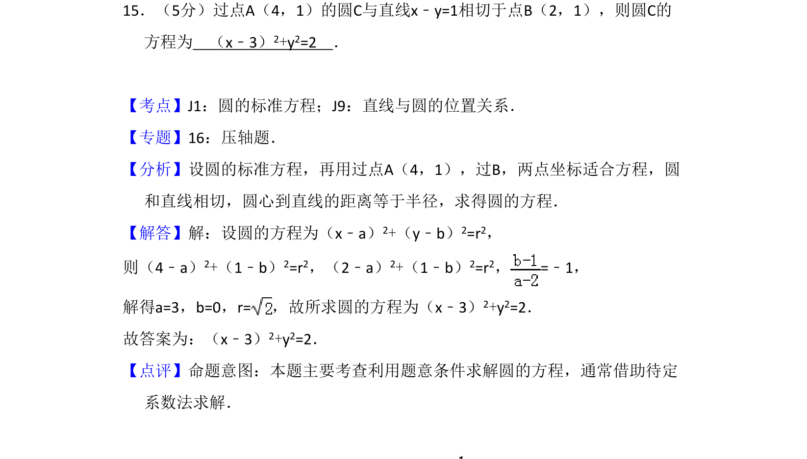
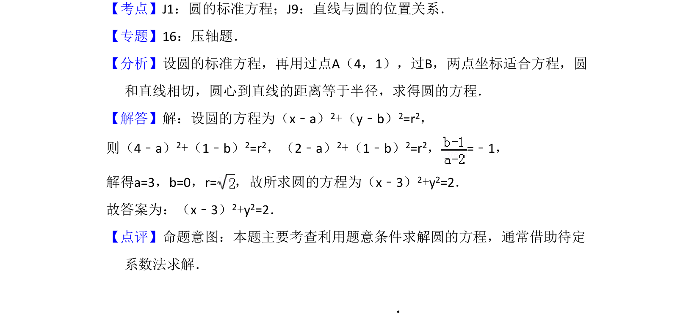

考点：圆标准方程 直线与圆的位置关系 点到直线距离公式

根据点与坐标、相切条件，利用待定系数法求解圆的标准方程。

📄 原 PDF 第 11 页：
素材/真题/吉林/2008-2024·（吉林）数学高考真题/2010年高考数学试卷（理）（新课标）（解析卷）.pdf
15．（5分）过点A（4，1）的圆C与直线x﹣y=1相切于点B（2，1），则圆C的 方程为 （x﹣3）2+y2=2 ．
【考点】J1：圆的标准方程；J9：直线与圆的位置关系．菁优网版权所有 【专题】16：压轴题． 【分析】设圆的标准方程，再用过点A（4，1），过B，两点坐标适合方程，圆 和直线相切，圆心到直线的距离等于半径，求得圆的方程． 【解答】解：设圆的方程为（x﹣a）2+（y﹣b）2=r2， 则（4﹣a）2+（1﹣b）2=r2，（2﹣a）2+（1﹣b）2=r2，=﹣1， 解得a=3，b=0，r=，故所求圆的方程为（x﹣3） 2+y2=2． 故答案为：（x﹣3）2+y2=2． 【点评】命题意图：本题主要考查利用题意条件求解圆的方程，通常借助待定 系数法求解．